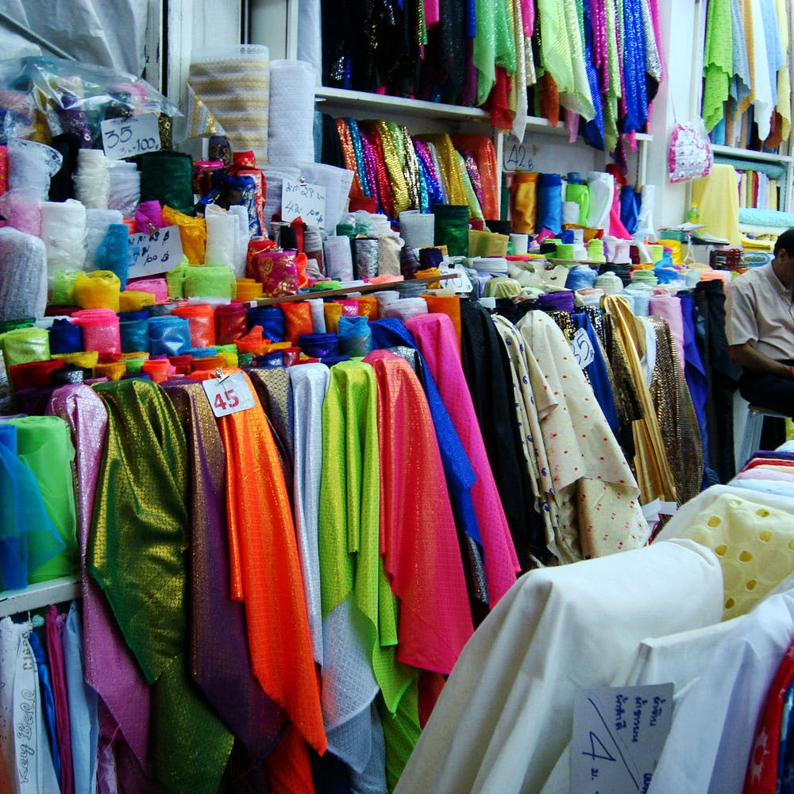

We Have Reached 50 Stores.
|
|---|
Stock Clearance Offer
20%
35% OFF
on all major brands
|  |
Libra Fashion is a casual wear manufacturer and retailer aiming to become the leading
clothing chain in Nepal. It makes sure that its products are reasonably priced and provides ‘the
tools for fashion, so that everybody can express their own style’. It is continuously developing
products of exceptional quality and grace to deliver an extensive line of fashion apparel.
|
|---|